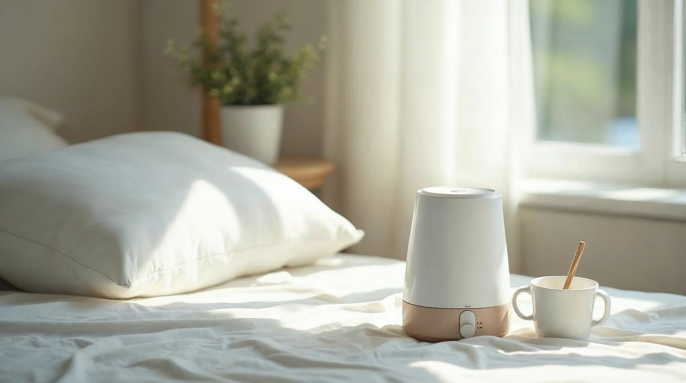

이종호 한의사 감수좋은꿈참사랑한의원 대표원장 (한의사 면허번호 19769)발행 2026-11-26 · 수정 2026-11-26
이 글의 차례
아침마다 아이 코밑이 누렇게 굳어 있습니다. 휴지로 닦아 주면 끈적한 콧물이 길게 따라 나오고, 아이는 코가 막혀 입을 벌린 채 숨을 쉽니다. 밤이면 누워서 컥컥 기침을 하고, 아침 첫마디가 코맹맹이 소리입니다. 감기에 걸린 지 벌써 3주가 넘었는데, 콧물은 좀처럼 끝날 기미가 없습니다.
진료실에서 부모님들은 "이게 축농증인가요?"라고 조심스럽게 물으십니다. 누런 콧물은 왠지 고름처럼 보이고, 오래가면 무언가 큰 문제가 생긴 것 같아 불안해지시니까요. 항생제를 먹여야 하는지, 언제까지 기다려야 하는지 기준이 없어 더 답답하십니다.
먼저 말씀드리면, 누런 콧물이 나온다고 모두 축농증은 아닙니다. 감기의 회복 과정에서도 콧물은 맑았다가 누렇게 짙어지고, 다시 맑아지는 흐름을 거칩니다. 축농증은 콧속 옆의 빈 공간인 부비동에 염증이 생겨 그 흐름이 오래 멈춰 있는 상태라고 보시면 됩니다.
아이의 코는 어른보다 좁고, 부비동도 아직 자라는 중이라 감기 뒤 콧물이 쉽게 고입니다. 그래서 축농증이 생겼는지를 확인하는 일과 함께, 아이의 코가 왜 자꾸 막히고 고이는지를 살피는 일이 중요합니다. 이 글에서는 그 두 가지를 차근차근 이야기해 보겠습니다.
부비동과 축농증은 무엇인가요
부비동은 코 주변 얼굴뼈 속에 있는 빈 공간입니다. 이마, 눈 사이, 광대 안쪽에 자리하고 있고, 작은 통로로 콧속과 이어져 있습니다. 평소에는 이 통로로 공기가 드나들고, 부비동 안에서 만들어진 점액이 콧속으로 빠져나갑니다.
감기나 알레르기로 콧속 점막이 부으면 이 통로가 좁아지거나 막힙니다. 그러면 부비동 안의 점액이 빠져나가지 못하고 고이게 되고, 그 안에서 세균이 자라 염증이 생기기 쉬워집니다. 이것이 흔히 축농증이라 부르는 부비동염입니다.
아이들은 부비동이 아직 다 자라지 않아서 어른과 염증이 생기는 자리가 조금 다릅니다. 어린아이는 눈 사이와 광대 안쪽 부비동에 염증이 잘 생기고, 이마 쪽 부비동은 더 커서야 자리를 잡습니다. 그래서 아이가 이마가 아프다고 하는 경우는 어른보다 드뭅니다.
왜 아이에게 축농증이 잘 생길까요
아이 축농증은 대개 감기에서 시작합니다. 감기로 부은 콧속 점막이 제때 가라앉지 못하면 부비동 통로가 막혀 콧물이 고이기 때문입니다. 감기를 자주 앓는 시기에 축농증도 잘 생기는 이유입니다.
- 감기가 끝나기 전에 다음 감기를 연달아 앓는 경우
- 알레르기 비염으로 콧속 점막이 늘 부어 있는 경우
- 아데노이드가 커서 코 뒤쪽 통로가 좁은 경우
- 어린이집이나 학교에서 단체 생활을 막 시작한 경우
- 실내가 너무 건조하거나 간접흡연에 노출되는 경우
- 코를 잘 풀지 못해 콧물이 오래 고여 있는 경우
이 가운데 알레르기 비염과 아데노이드는 축농증이 되풀이되는 아이에게서 자주 함께 보입니다. 축농증 자체를 치료하는 것과 함께, 코가 자꾸 막히는 바탕이 무엇인지를 이비인후과나 소아청소년과에서 확인해 두시면 다음 축농증을 줄이는 데 도움이 됩니다.
감기, 비염, 축농증은 어떻게 다른가요
감기 콧물은 처음에 맑다가 며칠 뒤 누렇게 짙어지고, 대개 열흘 안팎으로 줄어듭니다. 열이나 목 아픔, 기침이 함께 오고, 콧물이 줄면서 다른 증상도 함께 가라앉는 흐름을 보입니다. 누런 콧물이 며칠 나온다고 해서 바로 축농증으로 보지는 않습니다.
알레르기 비염은 맑은 콧물과 연달아 나오는 재채기, 코 가려움이 특징입니다. 아침에 일어나서나 먼지, 꽃가루에 닿은 뒤 심해지고, 계절에 따라 되풀이됩니다. 눈이 가렵고 눈 밑이 어두워지는 모습이 함께 보이기도 합니다.
축농증은 누렇거나 초록빛 콧물과 코막힘이 열흘 넘게 줄지 않고 이어지거나, 좋아지는 듯하다가 다시 열과 함께 심해지는 모습을 보입니다. 목 뒤로 콧물이 넘어가 밤과 아침에 기침이 심하고, 입 냄새가 나거나 얼굴이 묵직하다고 하는 아이도 있습니다. 이런 흐름이라면 소아청소년과나 이비인후과에서 진찰을 받아 보세요.
항생제는 꼭 먹여야 하나요
부모님들이 가장 고민하시는 부분입니다. 아이 축농증은 진찰한 선생님이 증상의 기간과 정도를 보고 항생제를 쓸지, 조금 더 지켜볼지를 정합니다. 가볍다면 코 세척과 생활 관리로 지켜보기도 하고, 열이 높거나 오래 이어지면 항생제를 처방하기도 합니다.
항생제를 처방받았다면 안내받은 기간 동안 빠짐없이 먹이는 것이 중요합니다. 콧물이 줄었다고 중간에 멈추면 염증이 다시 심해지거나 다음에 약이 덜 들을 수 있습니다. 먹는 동안 설사나 발진이 생기면 처방한 선생님께 먼저 알려 주세요.
한의원 진료를 함께 받으시더라도 항생제나 코 스프레이는 처방대로 이어 가시면 됩니다. 한의원에서는 그 과정에서 아이의 코막힘과 잠, 입맛, 다음 감기를 견디는 힘처럼 함께 살필 수 있는 부분을 봅니다.
코 세척과 코 풀기는 어떻게 도와주나요
코 세척은 콧속에 고인 콧물을 씻어 내고 점막을 촉촉하게 해 주는 방법입니다. 아이용 생리식염수 스프레이나 세척기를 쓰고, 처음에는 아이가 놀라지 않도록 부모님이 먼저 해 보이며 천천히 익숙해지게 해 주세요. 세척액은 체온과 비슷한 미지근한 온도로 준비하시는 것이 좋습니다.
세척 방법과 횟수는 소아청소년과나 이비인후과에서 아이 나이에 맞게 안내받으시길 권합니다. 너무 어린아이는 세척 대신 식염수를 몇 방울 넣고 콧물 흡입기로 부드럽게 빼 주는 방법을 쓰기도 합니다. 세척기는 쓸 때마다 깨끗이 씻어 말려 두세요.
코를 풀 때는 양쪽을 한꺼번에 세게 풀지 말고, 한쪽 콧구멍을 살짝 막고 반대쪽을 부드럽게 푸는 연습을 시켜 주세요. 세게 풀면 콧물이 귀 쪽으로 밀려 중이염을 부를 수 있습니다. 코 풀기를 잘하게 되면 축농증이 되풀이되는 것을 줄이는 데도 보탬이 됩니다.

밤기침과 잠은 어떻게 살피나요
축농증이 있는 아이는 누우면 콧물이 목 뒤로 넘어가 기침을 합니다. 잠들 무렵과 새벽, 아침에 일어난 직후에 기침이 심한 것이 특징입니다. 기침 때문에 깨고, 코가 막혀 입을 벌리고 자니 잠이 얕아지고, 아침에는 목이 칼칼하다고 합니다.
잠자리에서는 베개를 조금 높여 머리를 살짝 들어 주면 콧물이 덜 넘어가기도 합니다. 방이 너무 건조하지 않게 습도를 맞추고, 자기 전에 코 세척을 해 주거나 따뜻한 물을 조금 마시게 하는 것도 도움이 됩니다. 아이 방에서 담배 냄새나 강한 방향제 냄새가 나지 않도록 해 주세요.
잠을 설치면 다음 날 아이가 예민해지고 입맛도 떨어집니다. 축농증이 이어지는 동안에는 평소보다 조금 일찍 재워 잠의 양을 넉넉히 채워 주세요.
축농증을 앓는 동안 먹는 것과 등원은 어떻게 하나요
코가 막히면 냄새를 잘 맡지 못해 음식 맛이 덜 느껴지고, 목 뒤로 넘어간 콧물 때문에 속이 메스꺼워 입맛이 떨어지는 아이가 많습니다. 이럴 때는 따뜻한 국물이 있는 부드러운 음식을 조금씩 자주 주시고, 물을 넉넉히 마시게 해 주세요. 몸에 물이 넉넉해야 콧물도 묽어져 잘 빠져나옵니다.
차가운 음료와 아이스크림, 기름지고 단 간식은 축농증을 앓는 동안 잠시 줄여 주시길 권합니다. 이런 음식이 콧물을 직접 늘린다고 단정하기는 어렵지만, 입맛을 더 떨어뜨리고 속을 불편하게 해 회복에 쓸 힘을 빼앗기 쉽습니다.
열이 없고 아이가 잘 놀며 먹는다면 등원 여부는 소아청소년과 안내와 기관 기준을 따르시면 됩니다. 다만 축농증이 이어지는 동안에는 하원 뒤 일정을 가볍게 잡고, 학원이나 수영처럼 체력을 많이 쓰는 활동은 잠시 쉬어 가도 괜찮습니다. 수영장 물이 코로 들어가면 콧속이 더 자극될 수 있습니다.
축농증과 중이염은 왜 함께 오나요
코 뒤쪽과 귀는 이관이라는 가는 통로로 이어져 있습니다. 아이의 이관은 어른보다 짧고 수평에 가까워, 코에 고인 콧물과 염증이 귀로 쉽게 번집니다. 그래서 축농증을 앓는 아이가 귀가 아프다고 하거나 귀를 자꾸 만지면 중이염이 함께 왔는지 확인해 보셔야 합니다.
젖병이나 빨대 컵을 누워서 물고 자는 습관도 이관으로 액체가 넘어가기 쉽게 만듭니다. 마실 때는 앉아서 마시게 하고, 콧물이 많은 날에는 코 세척과 코 풀기를 조금 더 챙겨 주세요.
먼저 이렇게 여쭙니다
처음 오시면 대략 이런 순서로 여쭙니다.
- 콧물은 언제부터 이어졌고, 색과 양은 어떻게 변했나요?
- 열, 기침, 귀 통증, 얼굴이나 눈 주위 부기가 있나요?
- 소아청소년과나 이비인후과에서 들은 진단과 처방약은 무엇인가요?
- 잘 때 코를 골거나 입을 벌리고 자나요?
- 재채기, 맑은 콧물, 코 가려움이 계절마다 되풀이되나요?
- 감기는 한 해에 몇 번쯤 앓나요?
입맛과 대변, 낮의 기운, 어린이집이나 학교생활도 함께 여쭙습니다.
일상에서 먼저 해 볼 수 있는 것
축농증이 되풀이되지 않도록 코가 막히는 바탕을 줄여 가는 것이 중심입니다.
- 처방받은 약은 안내받은 기간대로 빠짐없이 먹이기
- 안내받은 방법대로 코 세척을 꾸준히 하기
- 한쪽씩 부드럽게 코 푸는 연습하기
- 방 습도를 너무 건조하지 않게 맞추고 하루 몇 번 환기하기
- 침구를 자주 빨고 아이 방 먼지를 줄이기
- 감기 뒤에는 일찍 재우고 따뜻한 물을 자주 마시게 하기
따뜻한 수건을 코와 광대 위에 잠시 올려 주면 막힌 느낌이 조금 덜어지는 아이도 있습니다. 너무 뜨겁지 않은지 부모님 손목 안쪽에 먼저 대 보고 올려 주세요.
한의원에서 함께 살필 수 있는 경우
- 축농증이 해마다 여러 번 되풀이되는 경우
- 감기만 걸리면 누런 콧물이 몇 주씩 이어지는 경우
- 코막힘 때문에 입을 벌리고 자고 잠이 얕은 경우
- 알레르기 비염이 함께 있어 코가 늘 불편한 경우
- 축농증을 앓는 동안 입맛이 떨어지고 쉽게 지치는 경우
좋은꿈참사랑한의원에서는 먼저 아래 '먼저 확인이 필요한' 신호가 없는지부터 봅니다. 그다음 맥을 짚고 콧속과 목, 혀를 살피며 잠과 입맛, 대변을 여쭙습니다. 진찰한 내용을 바탕으로 생활에서 바꿔 볼 것 하나와 함께 아이 몸에 맞는 관리를 상의합니다.
한약을 상의할 때는 아이가 먹고 있는 항생제와 코 스프레이, 다른 약을 모두 확인하고 신중하게 정합니다. 침을 무서워하는 아이에게 억지로 하지 않고, 코 주변과 손을 부드럽게 눌러 주는 방법처럼 집에서도 따라 할 수 있는 방법을 함께 알려 드립니다. 축농증의 진단과 약 처방은 소아청소년과나 이비인후과와 나란히 가시면 됩니다.
이렇게 기록해 오시면 상담이 쉬워집니다
축농증은 콧물의 흐름을 적어 두면 회복이 어디쯤인지 보기 쉽습니다. 2주 정도만 적어 보세요.
- 콧물의 색과 양을 하루 한 번 표시
- 열, 기침이 심했던 시간대
- 코 세척과 약을 한 횟수
- 잠든 시각과 밤에 깬 횟수, 코골이 여부
- 감기를 앓기 시작한 날과 등원을 쉰 날
이 기록은 소아청소년과나 이비인후과 진료 때도 그대로 보여 드리면 좋습니다. 약을 이어 갈지, 더 지켜볼지를 정하는 데 쓸모가 큽니다.
막힌 코 뒤에 있는 것까지
누런 콧물은 눈에 잘 보이니 부모님 마음도 그쪽에 쏠리기 쉽습니다. 하지만 축농증이 자꾸 되풀이되는 아이라면 콧물보다 코가 왜 자꾸 막히는지, 감기 사이에 회복할 시간이 충분한지를 함께 보는 것이 중요합니다.
이번 주에는 하나만 해 보세요. 한쪽씩 부드럽게 코 푸는 연습을 아이와 함께 하기. 다음에 오시면 콧물 기록을 함께 펼쳐 놓고, 아이의 코와 잠이 어떻게 지내고 있는지부터 이야기 나누겠습니다.
이런 증상은 먼저 확인이 필요합니다
- 눈 주위가 붓고 빨개지며 눈을 움직이면 아파하거나 물체가 둘로 보인다고 하는 경우
- 심한 두통과 함께 목이 뻣뻣하거나, 반복해서 토하고 축 처져 잘 깨지 않는 경우
이런 신호가 있으면 한의원보다 가까운 병원이나 응급실을 먼저 찾으세요.
함께 읽으면 좋은 글
- 코막힘과 누런 콧물이 오래가는 만성 부비동염(축농증)은 어떻게 살피나요?
- 아이가 아침마다 재채기와 맑은 콧물, 코막힘을 달고 사는 알레르기 비염은 어떻게 살피나요?
- 아이가 코를 골고 입을 벌리고 자는데 아데노이드가 크다는 말을 들었을 때는 어떻게 살피나요?
- 감기는 지나갔는데 아이 기침이 몇 주째 이어질 때는 무엇을 살피나요?
- 감기만 걸리면 귀가 아프다고 하는 아이, 반복되는 중이염은 어떻게 살피나요?
여쭙는 것
- 콧물은 언제부터 이어졌고, 색과 양은 어떻게 변했나요?
- 열, 기침, 귀 통증, 얼굴이나 눈 주위 부기가 있나요?
- 소아청소년과나 이비인후과에서 들은 진단과 처방약은 무엇인가요?
생활에서 해 볼 것
- 처방받은 약은 안내받은 기간대로 빠짐없이 먹이기
- 안내받은 방법대로 코 세척을 꾸준히 하기
- 한쪽씩 부드럽게 코 푸는 연습하기
한의원에서 함께 살필 것
- 축농증이 해마다 여러 번 되풀이되는 경우
- 감기만 걸리면 누런 콧물이 몇 주씩 이어지는 경우
- 코막힘 때문에 입을 벌리고 자고 잠이 얕은 경우
먼저 확인이 필요한 신호
- 눈 주위가 붓고 빨개지며 눈을 움직이면 아파하거나 물체가 둘로 보인다고 하는 경우
- 심한 두통과 함께 목이 뻣뻣하거나, 반복해서 토하고 축 처져 잘 깨지 않는 경우
한눈에 보는 표
| 구분 | 핵심 |
|---|---|
| 여쭙는 것 | 콧물은 언제부터 이어졌고, 색과 양은 어떻게 변했나요? 열, 기침, 귀 통증, 얼굴이나 눈 주위 부기가 있나요? |
| 생활에서 해 볼 것 | 처방받은 약은 안내받은 기간대로 빠짐없이 먹이기 안내받은 방법대로 코 세척을 꾸준히 하기 |
| 한의원에서 함께 살필 것 | 축농증이 해마다 여러 번 되풀이되는 경우 감기만 걸리면 누런 콧물이 몇 주씩 이어지는 경우 |
| 먼저 확인이 필요한 신호 | 눈 주위가 붓고 빨개지며 눈을 움직이면 아파하거나 물체가 둘로 보인다고 하는 경우 심한 두통과 함께 목이 뻣뻣하거나, 반복해서 토하고 축 처져 잘 깨지 않는 경우 |
자주 묻는 질문
누런 콧물이 나오면 축농증인가요?
감기 회복 과정에서도 콧물이 며칠 누렇게 짙어질 수 있습니다. 누런 콧물과 코막힘이 열흘 넘게 줄지 않거나, 나아지다 다시 열과 함께 심해지면 소아청소년과나 이비인후과에서 진찰을 받아 보세요.
코 세척은 매일 해도 되나요?
아이 나이에 맞는 방법과 횟수를 소아청소년과나 이비인후과에서 안내받아 하시길 권합니다. 세척액은 미지근하게, 세척기는 쓸 때마다 깨끗이 씻어 말려 주세요.
항생제를 먹는 중에 한의원 진료를 받아도 되나요?
항생제는 처방대로 이어 가시면서 함께 상의하실 수 있습니다. 먹고 있는 약을 알려 주시면 확인하고 신중하게 정합니다.
축농증이 자주 되풀이되는 아이는 무엇을 확인해야 하나요?
알레르기 비염이나 아데노이드처럼 코가 자꾸 막히는 바탕이 있는지 이비인후과나 소아청소년과에서 확인해 두시면 좋습니다. 한의원에서는 잠과 입맛, 감기 사이의 회복을 함께 살핍니다.
좋은꿈참사랑한의원은 재진 때 지난번 이야기부터 이어서 여쭙니다. 진료시간과 예약은 오시는 길에서 확인하세요.
어디서 상담받을 수 있나요?
좋은꿈참사랑한의원은 서울 동작구 만양로2길 2 신성빌딩 3층·5층(서울 동작구 상도동, 7호선 상도역 3번 출구 근처)에 있습니다. 한의사 3명(이종호 대표원장, 조영기 수석진료원장, 정원영 진료원장)이 진료합니다. 진료시간은 평일 09:30~20:00(점심 13:00~14:00), 토·일·공휴일 09:30~15:00이며, 방문 전 전화로 확인을 권합니다. 예약은 네이버 예약, 카카오톡 상담, 전화 02-815-7510로 받습니다.
이 글은 일반적인 건강 정보이며 개인의 진단이나 치료를 대신하지 않습니다. 증상이 있거나 복용 중인 약이 있다면 진료를 통해 확인하세요. 치료 효과는 개인마다 다를 수 있습니다.
작성 기준: 일반적으로 알려져 있는 건강 정보를 참고해 정리했습니다(대표원장 감수). 증상 기록은 1~2주 동안 하루 1회, 비슷한 시간에 적어 오시면 지난 상태와 비교하기 쉽습니다.